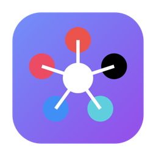

Last updated: 23 November 2026
Sosyal Panel is a personal, non-commercial tool. It is used only by its developer to publish his own videos to his own accounts. There are no other users and no accounts can be created.
The developer is responsible for all content uploaded with the tool and follows the terms and community guidelines of YouTube, TikTok, Instagram, Facebook and X. Gameplay footage is used in line with the publishers' video policies.
Use of each platform through this tool is also subject to that platform's own terms of service and developer policies.
The tool is provided "as is", without any warranty.
These terms may be updated; the date above shows the latest version.
Sosyal Panel kişisel ve ticari olmayan bir araçtır; yalnızca geliştiricinin kendi videolarını kendi hesaplarına yüklemesi için kullanılır. Yüklenen içerikten geliştirici sorumludur ve platformların kurallarına uyar.